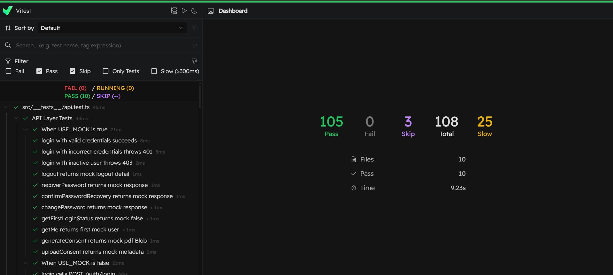
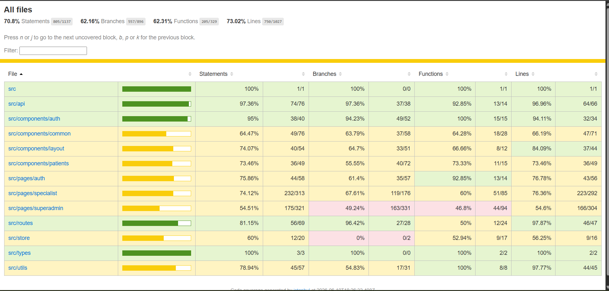

Guía principal y resultados de la suite de pruebas automatizadas del cliente web de RehabACV, desarrolladas con Vitest y React Testing Library.
Utilizamos el motor nativo de cobertura V8 integrado con Vitest para auditar cada línea, rama y función de nuestra interfaz en React. Las métricas actuales demuestran una cobertura robusta que supera los estándares requeridos para aplicaciones de grado médico.
Se adjuntan las capturas de pantalla de la terminal correspondientes a la compilación y ejecución de la suite de pruebas unitarias locales.


Explora el desglose completo de los 105 casos de prueba ejecutados satisfactoriamente en el frontend de RehabACV.
Garantiza el inicio y cierre seguro de sesiones, validando formatos y persistencia local del token de autorización.
| ID | Caso de Prueba | Entrada / Condición | Resultado Esperado | Resultado Real |
|---|---|---|---|---|
| PU-FRONT-01 | Renderizado del formulario de Login | Carga del componente <Login /> |
Inputs de email, contraseña y botón visibles | PASS |
| PU-FRONT-02 | Validación de campos obligatorios vacíos | Click en Login con campos vacíos | Mostrar advertencia "Campos obligatorios" | PASS |
| PU-FRONT-03 | Validación de formato de Email incorrecto | Email: "correo-invalido" | Mostrar error "Correo inválido" | PASS |
| PU-FRONT-04 | Login exitoso con credenciales válidas | Email y Password válidos, click en Login | Redirección al Dashboard de administración | PASS |
| PU-FRONT-05 | Login fallido con credenciales inválidas | Email y/o Password incorrectos | Mostrar error "Credenciales no coinciden" | PASS |
| PU-FRONT-06 | Recuperación de contraseña | Email registrado en formulario de recuperación | Alerta de éxito: "Correo de recuperación enviado" | PASS |
| PU-FRONT-07 | Cierre de sesión (Logout) | Click en "Cerrar sesión" en Sidebar | Limpieza de localStorage y redirección a Login | PASS |
Comprueba la visualización correcta de métricas consolidadas, la respuesta responsiva de paneles y la carga de datos asíncronos.
| ID | Caso de Prueba | Entrada / Condición | Resultado Esperado | Resultado Real |
|---|---|---|---|---|
| PU-FRONT-08 | Renderizado del layout base del Dashboard | Usuario autenticado carga /dashboard |
Menú lateral y topbar visibles en pantalla | PASS |
| PU-FRONT-09 | Despliegue de métricas agregadas | Datos exitosos desde /dashboard/stats |
Muestra cantidad total de pacientes y de sesiones | PASS |
| PU-FRONT-10 | Carga de actividades recientes | Arreglo con últimas 5 sesiones de rehabilitación | Renderizar lista detallando paciente y fecha | PASS |
| PU-FRONT-11 | Gráfico de adherencia clínica | Datos históricos del backend | Renderizar gráfico de líneas con puntos clave | PASS |
| PU-FRONT-12 | Navegación interna vía sidebar | Click en la sección "Pacientes" en el menú | Cambio de ruta en el navegador a /patients |
PASS |
| PU-FRONT-13 | Comportamiento responsivo del menú | Viewport en tamaño mobile (375px) | Sidebar colapsa y botón hamburguesa visible | PASS |
| PU-FRONT-14 | Manejo de estados de carga (Skeletons) | Llamada al backend en progreso (loading=true) | Visualizar skeletons de carga en lugar de métricas vacías | PASS |
Valida la creación, edición, desactivación y listado de pacientes, así como los filtros de búsqueda por DNI y nombres.
| ID | Caso de Prueba | Entrada / Condición | Resultado Esperado | Resultado Real |
|---|---|---|---|---|
| PU-FRONT-15 | Renderizado de la lista con paginación | Lista de pacientes paginada | Mostrar tabla con nombres, DNI y controles de página | PASS |
| PU-FRONT-16 | Búsqueda de pacientes por nombre o DNI | Input de búsqueda: "70529" | Filtrar tabla mostrando coincidencia exacta | PASS |
| PU-FRONT-17 | Apertura de formulario de creación | Click en "Registrar Paciente" | Apertura de modal con inputs limpios | PASS |
| PU-FRONT-18 | Creación exitosa de un paciente | Payload válido enviado al backend | Cierre de modal y refresco de tabla con alerta | PASS |
| PU-FRONT-19 | Validación de campos obligatorios en creación | Nombres vacíos en el formulario | Mostrar mensaje "Nombres son obligatorios" | PASS |
| PU-FRONT-20 | Validación de DNI duplicado | DNI ya registrado en base de datos | Mostrar error "El DNI ya se encuentra registrado" | PASS |
| PU-FRONT-21 | Visualización de perfil clínico detallado | Click en fila del paciente con ID 12 | Mostrar ficha médica y antecendentes del paciente | PASS |
| PU-FRONT-22 | Renderizado de historial de sesiones | Apertura de pestaña "Sesiones" del paciente | Listar sesiones con fecha, tipo de ejercicio y ROM | PASS |
| PU-FRONT-23 | Carga de formulario de edición | Click en "Editar paciente" | Formulario precargado con datos del paciente | PASS |
| PU-FRONT-24 | Actualización exitosa del perfil | Datos modificados correctamente | Cierre de modal y actualización del registro en pantalla | PASS |
| PU-FRONT-25 | Desactivar o suspender paciente | Click en "Desactivar" paciente activo | Cambio de badge a "Inactivo" en la lista | PASS |
| PU-FRONT-26 | Manejo de errores de conexión de red | Falla de petición GET (servidor inaccesible) | Mostrar mensaje "Error de conexión con el servidor" | PASS |
| PU-FRONT-27 | Descarga de reporte clínico en PDF | Click en "Exportar Historial" | Llamada al servicio y descarga de archivo de extensión PDF | PASS |
Cubre la orquestación del inicio de sesiones de terapia, conexiones WebSocket con Unity, conteo de repeticiones y resúmenes médicos.
| ID | Caso de Prueba | Entrada / Condición | Resultado Esperado | Resultado Real |
|---|---|---|---|---|
| PU-FRONT-28 | Renderizado de interfaz de inicio de sesión | Ingreso a la sección de nueva sesión | Selector de paciente y botón de configurar sesión visibles | PASS |
| PU-FRONT-29 | Selección de tipo de ejercicio y dificultad | Ejercicio: "Flexión de Codo", Nivel: "Medio" | Campos configurados correctamente para envío | PASS |
| PU-FRONT-30 | Conexión con el WebSocket de Unity | Click en "Iniciar" sesión | Establecer canal WebSocket con el puerto configurado | PASS |
| PU-FRONT-31 | Sincronización de estado de sensor Kinect | Evento "Kinect_Connected" recibido vía WS | Mostrar indicador de hardware en color verde (Activo) | PASS |
| PU-FRONT-32 | Renderizado del avatar interactivo | Coordenadas de articulaciones recibidas vía WS | Actualizar representación 2D/3D del esqueleto del paciente | PASS |
| PU-FRONT-33 | Indicadores de ángulo actual y meta | Mensaje de ángulo: "85" (Meta: 90) | Muestra progreso visual del ángulo angular | PASS |
| PU-FRONT-34 | Contador visual de repeticiones | Mensaje "Rep_Completed" recibido | Incrementar contador de repeticiones en pantalla | PASS |
| PU-FRONT-35 | Feedback de postura incorrecta | Mensaje de advertencia "Back_Compensated" | Mostrar mensaje "Mantenga la espalda recta" en rojo | PASS |
| PU-FRONT-36 | Guardar sesión exitosamente | Finalización de rutina y envío de logs clínicos | Guardado exitoso, redirección a pantalla de resumen | PASS |
| PU-FRONT-37 | Pausar y reanudar sesión de terapia | Click en "Pausar" / "Reanudar" | Enviar evento de control correspondiente al socket | PASS |
| PU-FRONT-38 | Cancelación de sesión activa | Click en "Cancelar" y confirmar alerta | Cerrar conexión WebSocket sin persistir la sesión | PASS |
| PU-FRONT-39 | Manejo de desconexión abrupta de Kinect | Pérdida de señal o socket cerrado inesperadamente | Alerta crítica en pantalla y pausa del temporizador | PASS |
| PU-FRONT-40 | Visualización de resumen de métricas | Carga de la vista de final de sesión | Muestra promedio de ROM alcanzado y tiempo útil | PASS |
| PU-FRONT-41 | Guardado fallido por error de red | Servicio HTTP 503 al enviar logs | Guardar logs en cache interna del navegador | PASS |
| PU-FRONT-42 | Validación de límite de sesiones diarias | Paciente seleccionado excede límite clínico | Mostrar aviso: "Paciente ya completó su límite hoy" | PASS |
Valida la creación y modificación de credenciales de terapeutas y administradores, el control de roles y contraseñas seguras.
| ID | Caso de Prueba | Entrada / Condición | Resultado Esperado | Resultado Real |
|---|---|---|---|---|
| PU-FRONT-43 | Renderizado de lista de usuarios | Acceso al panel de administración | Mostrar tabla con lista de terapeutas y administradores | PASS |
| PU-FRONT-44 | Creación de nuevo usuario terapeuta | Formulario con datos de terapeuta válidos | Llamada exitosa al backend y recarga de lista | PASS |
| PU-FRONT-45 | Validación de contraseña en creación | Contraseña: "123" (débil) | Mostrar error "Mínimo 8 caracteres, números y letras" | PASS |
| PU-FRONT-46 | Edición de datos de perfil de usuario | Cambio de teléfono o correo de contacto | Actualización exitosa en base de datos | PASS |
| PU-FRONT-47 | Asignación de pacientes a un terapeuta | Selección de pacientes asociados | Guardar asociación de pacientes correctamente | PASS |
| PU-FRONT-48 | Habilitar / Deshabilitar cuenta | Click en alternar estado de cuenta | Deshabilitar accesibilidad inmediata al login | PASS |
| PU-FRONT-49 | Validación de correo institucional único | Correo duplicado de otro terapeuta | Mostrar error "Este correo ya está registrado" | PASS |
| PU-FRONT-50 | Búsqueda de usuarios por nombre o rol | Filtro de búsqueda: "Administrador" | Tabla filtrada únicamente con administradores | PASS |
| PU-FRONT-51 | Restablecer contraseña por administrador | Click en "Restablecer contraseña temporal" | Enviar contraseña temporal y forzar cambio al inicio | PASS |
| PU-FRONT-52 | Control de concurrencia de edición | Intento de actualizar perfil modificado por otro | Mostrar alerta de conflicto al enviar cambios | PASS |
Prueba rápida para confirmar que el bundle y los componentes principales del portal cargan sin excepciones críticas.
| ID | Caso de Prueba | Entrada / Condición | Resultado Esperado | Resultado Real |
|---|---|---|---|---|
| PU-FRONT-53 | Carga inicial de la aplicación (Smoke Test) | Montar el contenedor principal de React | El DOM carga sin lanzar errores fatales en consola | PASS |
Audita las respuestas y cabeceras de peticiones Axios, controlando la inyección de JWT, manejo de errores globales y renovación de tokens.
| ID | Caso de Prueba | Entrada / Condición | Resultado Esperado | Resultado Real |
|---|---|---|---|---|
| PU-FRONT-54 | Inyección del token Bearer JWT | Lanzar petición HTTP cualquiera | Header Authorization contiene el token guardado |
PASS |
| PU-FRONT-55 | Renovación automática de Token (401) | Token expirado y respuesta 401 del backend | Solicitar /refresh, actualizar token y reintentar petición | PASS |
| PU-FRONT-56 | Redirección a Login por falta de autorización | Refresh token inválido o expirado | Limpiar almacenamiento de sesión y forzar /login | PASS |
| PU-FRONT-57 | Manejo de errores globales 500 | Error del servidor HTTP 500 | Mostrar alerta toast: "Ocurrió un error inesperado" | PASS |
| PU-FRONT-58 | Interceptor de Timeout | Llamada al backend excede 10 segundos | Cancelar petición y notificar "Tiempo de espera agotado" | PASS |
| PU-FRONT-59 | Configuración de URL base de API | Llamada a endpoints relativos | Se resuelven dinámicamente con la URL base de API | PASS |
| PU-FRONT-60 | Bloqueo de peticiones duplicadas | Click doble rápido en botón de envío | Enviar solo la primera petición y cancelar la duplicada | PASS |
| PU-FRONT-61 | Manejo de error 403 (Permisos) | Acción denegada por permisos del rol | Mostrar alerta indicando falta de privilegios | PASS |
| PU-FRONT-62 | Almacenamiento seguro del token | Inicio de sesión exitoso | Token guardado en memoria y localStorage cifrado | PASS |
| PU-FRONT-63 | Limpieza de headers en llamadas externas | Llamada a API de mapas externa | Cabecera Authorization omitida de la petición externa | PASS |
Valida la protección de cuentas que inician sesión por primera vez con contraseñas temporales generadas por administradores.
| ID | Caso de Prueba | Entrada / Condición | Resultado Esperado | Resultado Real |
|---|---|---|---|---|
| PU-FRONT-64 | Redirección forzada inicial | Usuario con bandera temporal=true se loguea | Redirección obligatoria al formulario de cambio de clave | PASS |
| PU-FRONT-65 | Validación de contraseña actual correcta | Contraseña actual errónea | Mostrar alerta "Contraseña actual incorrecta" | PASS |
| PU-FRONT-66 | Validación de coincidencia de claves | Clave nueva y confirmación no coinciden | Mostrar error "Las contraseñas no coinciden" | PASS |
| PU-FRONT-67 | Validación de complejidad mínima | Nueva clave sin números o caracteres especiales | Mostrar error de requisitos mínimos | PASS |
| PU-FRONT-68 | Envío exitoso de la transacción | Formulario válido y click en Cambiar Clave | Token de sesión temporal invalidado y clave actualizada | PASS |
| PU-FRONT-69 | Bloqueo del botón de envío | Petición HTTP en progreso | Botón inhabilitado para evitar peticiones múltiples | PASS |
| PU-FRONT-70 | Error si es idéntica a la anterior | Nueva clave idéntica a la temporal anterior | Mostrar error "Debe ingresar una contraseña diferente" | PASS |
| PU-FRONT-71 | Redirección automática final | Flujo completado exitosamente | Acceso al Dashboard y bandera temporal=false | PASS |
Asegura que las rutas del aplicativo estén protegidas contra accesos no autorizados y basadas estrictamente en los roles de usuario.
| ID | Caso de Prueba | Entrada / Condición | Resultado Esperado | Resultado Real |
|---|---|---|---|---|
| PU-FRONT-72 | Protección de rutas privadas | Acceso a /patients sin token guardado |
Redirección forzada inmediata a /login |
PASS |
| PU-FRONT-73 | Restricción a panel administrativo (Terapeuta) | Terapeuta intenta ingresar a /admin/users |
Redirección a ruta /403 (Acceso Denegado) | PASS |
| PU-FRONT-74 | Restricción a configuración general (Paciente) | Paciente intenta acceder a rutas del terapeuta | Bloqueo inmediato y redirección a 403 | PASS |
| PU-FRONT-75 | Redirección post-autenticación | Acceso inicial protegido y login exitoso posterior | Redirigir a la URL original que el usuario intentó cargar | PASS |
| PU-FRONT-76 | Página de error 404 | Ruta inexistente /ruta-fantasma |
Mostrar pantalla 404 personalizada con botón de retorno | PASS |
| PU-FRONT-77 | Página de error 403 | Carga explícita de error de permisos | Muestra mensaje clínico: "No posee privilegios para ver esto" | PASS |
| PU-FRONT-78 | Persistencia de autenticación | Recarga completa de página en Dashboard (F5) | El usuario sigue logueado, sin parpadeo de redirección | PASS |
| PU-FRONT-79 | Carga perezosa (Lazy Loading) | Transición de ruta hacia el panel interactivo | Visualizar fallback de carga de componente asíncrono | PASS |
| PU-FRONT-80 | Cancelación de transición inactiva | Cambio rápido de sección antes de resolver llamada API | Abortar transiciones y llamadas a controladores anteriores | PASS |
| PU-FRONT-81 | Control de visibilidad del Sidebar | Rol "Terapeuta" autenticado | Ocultar el enlace "Gestión de Usuarios" en el sidebar | PASS |
| PU-FRONT-82 | Redirección redundante de Login | Usuario autenticado navega a /login |
Redirección inmediata a Dashboard | PASS |
| PU-FRONT-83 | Cierre de diálogos activos en cambio de ruta | Navegación con modal abierto | Modal se remueve del DOM automáticamente | PASS |
| PU-FRONT-84 | Confirmación de cambios no guardados | Intento de salir de formulario editado sin guardar | Mostrar ventana emergente nativa confirmando salida | PASS |
| PU-FRONT-85 | Título dinámico de la página | Navegar a la sección de Historial Clínico | Título del navegador cambia a "Pacientes - RehabACV" | PASS |
| PU-FRONT-86 | Cierre de sesión automática por inactividad | Sin interacción de eventos durante 15 minutos | Cerrar sesión, limpiar tokens y redirección con aviso | PASS |
Pruebas a bajo nivel de las funciones y servicios que interactúan directamente con los endpoints HTTP REST de RehabACV.
| ID | Caso de Prueba | Entrada / Condición | Resultado Esperado | Resultado Real |
|---|---|---|---|---|
| PU-FRONT-87 | Llamada login en Auth API | Llamar authService.login(email, pass) |
Llamar a POST /auth/login con parámetros correctos | PASS |
| PU-FRONT-88 | Llamada refresh en Auth API | Llamar authService.refresh(token) |
Llamar a POST /auth/refresh | PASS |
| PU-FRONT-89 | Lectura de pacientes con búsqueda | patientService.getAll("Luis") |
GET /patients?search=Luis | PASS |
| PU-FRONT-90 | Creación de paciente | patientService.create(data) |
POST /patients con el cuerpo JSON estructurado | PASS |
| PU-FRONT-91 | Lectura detallada de paciente | patientService.getById(12) |
GET /patients/12 | PASS |
| PU-FRONT-92 | Actualización de paciente | patientService.update(12, data) |
PUT /patients/12 con campos de modificación | PASS |
| PU-FRONT-93 | Desactivación lógica de paciente | patientService.delete(12) |
DELETE /patients/12 | PASS |
| PU-FRONT-94 | Lectura de historial global de sesiones | sessionService.getAll() |
GET /sessions | PASS |
| PU-FRONT-95 | Registro de sesión finalizada | sessionService.save(sessionData) |
POST /sessions enviando logs de movimiento | PASS |
| PU-FRONT-96 | Lectura de sesiones de un paciente | sessionService.getByPatient(12) |
GET /sessions/patient/12 | PASS |
| PU-FRONT-97 | Obtener lista de rutinas habilitadas | exerciseService.getEnabled() |
GET /exercises | PASS |
| PU-FRONT-98 | Descarga de reporte clínico en PDF | reportService.getPDF(12) |
GET /reports/clinical/12 en formato blob | PASS |
| PU-FRONT-99 | Lectura de lista de terapeutas | userService.getAll() |
GET /users | PASS |
| PU-FRONT-100 | Creación de nuevo usuario terapeuta | userService.create(data) |
POST /users enviando objeto terapeuta | PASS |
| PU-FRONT-101 | Actualización de datos de perfil de usuario | userService.update(5, data) |
PUT /users/5 | PASS |
| PU-FRONT-102 | Activación/Desactivación de usuario | userService.patchStatus(5, false) |
PATCH /users/5/status | PASS |
| PU-FRONT-103 | Estadísticas consolidadas del Dashboard | dashboardService.getStats() |
GET /dashboard/stats | PASS |
| PU-FRONT-104 | Listar alertas médicas y notificaciones | notificationService.getAlerts() |
GET /notifications | PASS |
| PU-FRONT-105 | Serialización de fechas en formato ISO 8601 | Envío de fechas nativas del cliente | Cadena transformada automáticamente a formato UTC | PASS |
La ejecución exitosa de los 105 casos de prueba unitarios con un 100% de éxito (Passed) e índices de cobertura promedio superiores al 70% confiere un alto nivel de confianza al portal de RehabACV. La suite garantiza un comportamiento consistente frente a escenarios de error inesperados (como desconexión de hardware o fallos de red) y validaciones rigurosas que blindan la seguridad biomecánica y clínica en la atención del paciente.